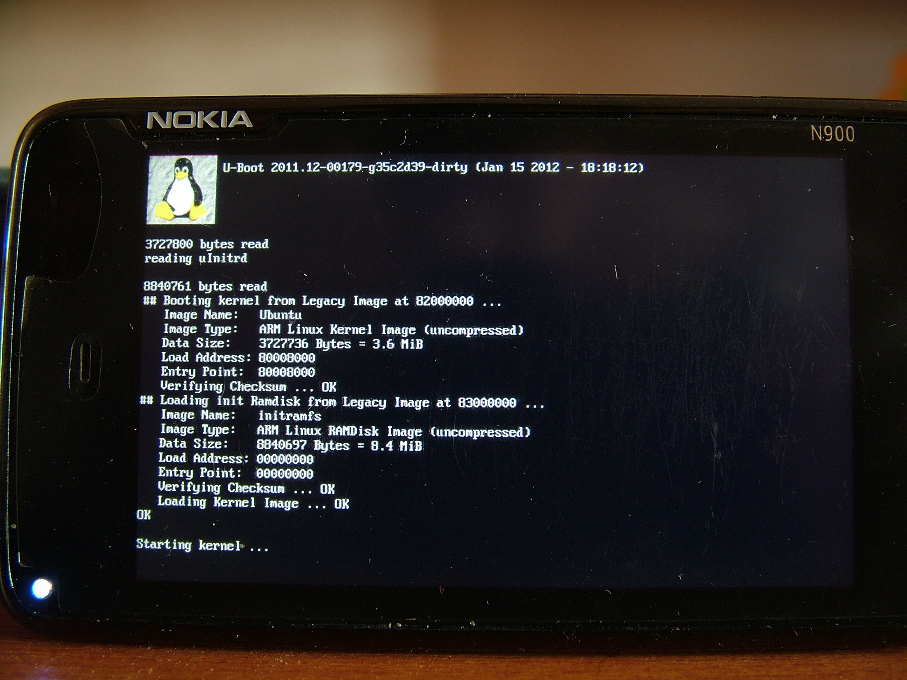
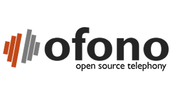
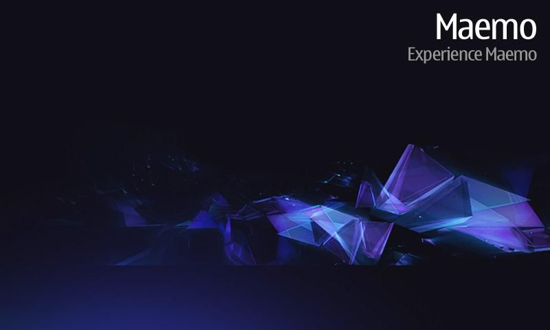
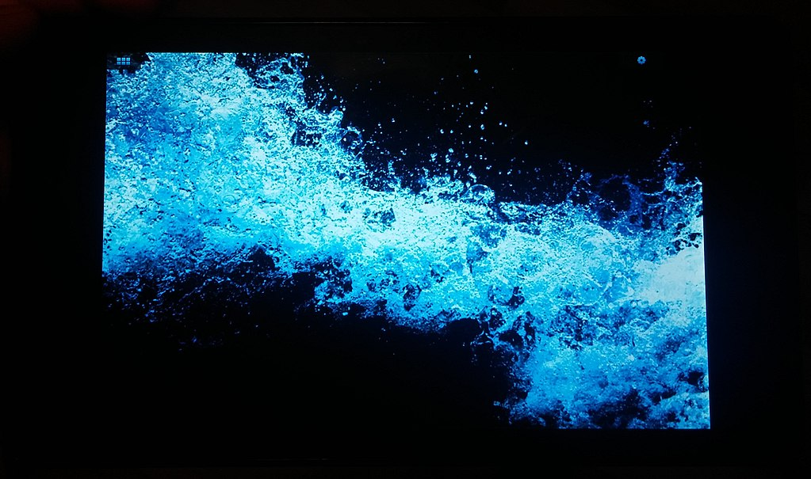
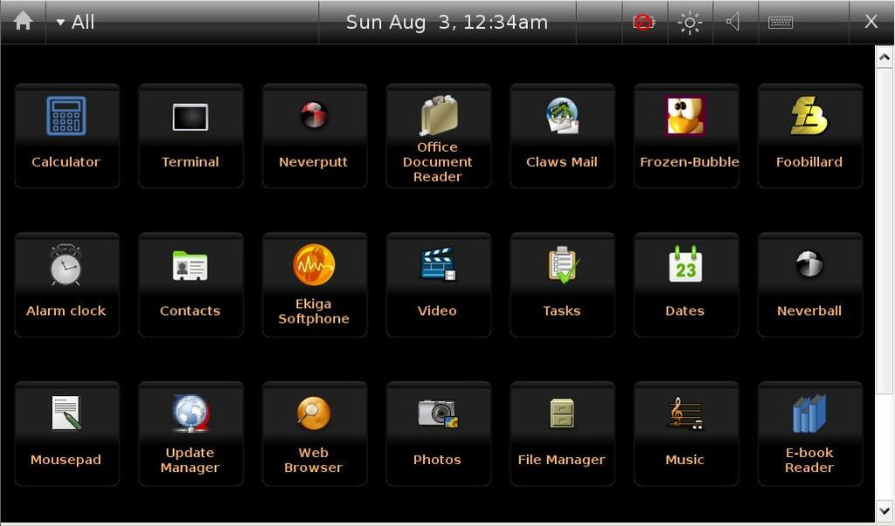

SISTEMAS MÓVILES OPENSOURCE
- Presentación
- ¿Por que Sistemas Libres?
- Uboot
- Ofono
- Maemo Leste
- PosmarketOS
Presentación
- Leonardo Gómez
- gomezgleonardob@disroot.org
- @gomezgleonardob
Uboot
Es un bootloader que se utiliza en dispositivos embebidos para empaquetar las instrucciones de arranque del núcleo del sistema operativo del dispositivo. Está disponible para varias arquitecturas informáticas
Uboot
Ofono
Ofono es un framework que proporciona una stack para interconectar dispositivos de telefonía móvil. oFono se controla a través del D-Bus; por ejemplo, se puede decir a ofono que envíe comandos AT a través de /dev/rfcomm0 llamando al D-Bus
Ofono
- Framework desarrollado por Intel y Nokia para usar con comunicaciones UMTS/GPRS
- Se divide en dos partes: una API para plugins, la cual estará encargada de comunicarse con el hardware, y una API de alto nivel que será un ambiente rico para desarrolladores
- D-Bus (Desktop Bus) es un sistema de comunicación entre procesos (IPC) y una llamada a procedimiento remoto (RPC) , para aplicaciones de software
Ofono

¿PORQUÉ CAMBIAR?
Existen varias opciones de sistemas operativo móviles entre los cuales más resaltan Android e IOS,pero siempre existira un nicho donde quieres controlar y personalizar ciertos aspectos del dispositivo que usas.
- Tizen
- Sailfish
- LinageOS
- AOSP
MAEMO
MAEMO nace como una plataforma de software creada por Nokia por necesidades smartphones y tabletas. El sistema se basa en una distribución GNU / Linux Debian. La plataforma consta del sistema operativo Maemo SDK
HILDON
Es un framework desarrollado originalmente para dispositivos móviles (PDAs, teléfonos móviles, etc.) que ejecutan el sistema operativo Linux, así como el sistema operativo Symbian.
Componentes
- Application Manager: Es un gestor gráfico de paquetes que utiliza las herramientas de gestión de paquetes de Debian APT
- Control Panel: Interfaz de configuración del usuario
- Desktop: Interfaz de usuario principal que es usada para lanzar apps,volumen,brillo
- Library: Herramienta para desarrollo se basaba en GTK+
HILDON
 EVOLUCIÓN
- OS2006 / Maemo 2 / Mistral Scirocco
- OS2008 / Maemo 4 / Chinook - Diablo
- Maemo 5 / Fremantle
- MeeGo / Harmattan
- Maemo Leste
MAEMO LESTE
- Maemo Leste se basa en Devuan Beowulf (Debian Buster) y todos los dispositivos compatibles vienen con núcleos Linux
- Se basa en el kernel principal de Linux
- Mantenido por la comunidad mediante CSSU
- Varias apps basadas en FOSS y GTK disponibles
ESTADO ACTUAL
INSTALACIÓN
Descargar la imagen para su dispositvo compatible de https://maedevu.maemo.org/images/
# Windows
Usando Win32Imager o BalenaEtcher para restaurar la imagen a memoria Microsd
#Linux
Usando dd y identificando el dispositivo sdx copiar el contenido a la Microsd
#MAC
Usando diskutil y identificando el dispositivo diskN copiar el contenido a la Microsd
DISPOSITIVOS
DEMO
PosmarketOS
- Se basa en Alpine Linux y todos los dispositivos compatibles vienen con núcleos Linux
- Se basa en el modelo FOSS
INSTALACIÓN
Descargar la imagen para su dispositvo compatible de https://images.postmarketos.org/bpo/
# Windows
Usando Win32Imager o BalenaEtcher para restaurar la imagen a memoria Microsd
#Linux
Usando dd y identificando el dispositivo sdx copiar el contenido a la Microsd
#MAC
Usando diskutil y identificando el dispositivo diskN copiar el contenido a la Microsd